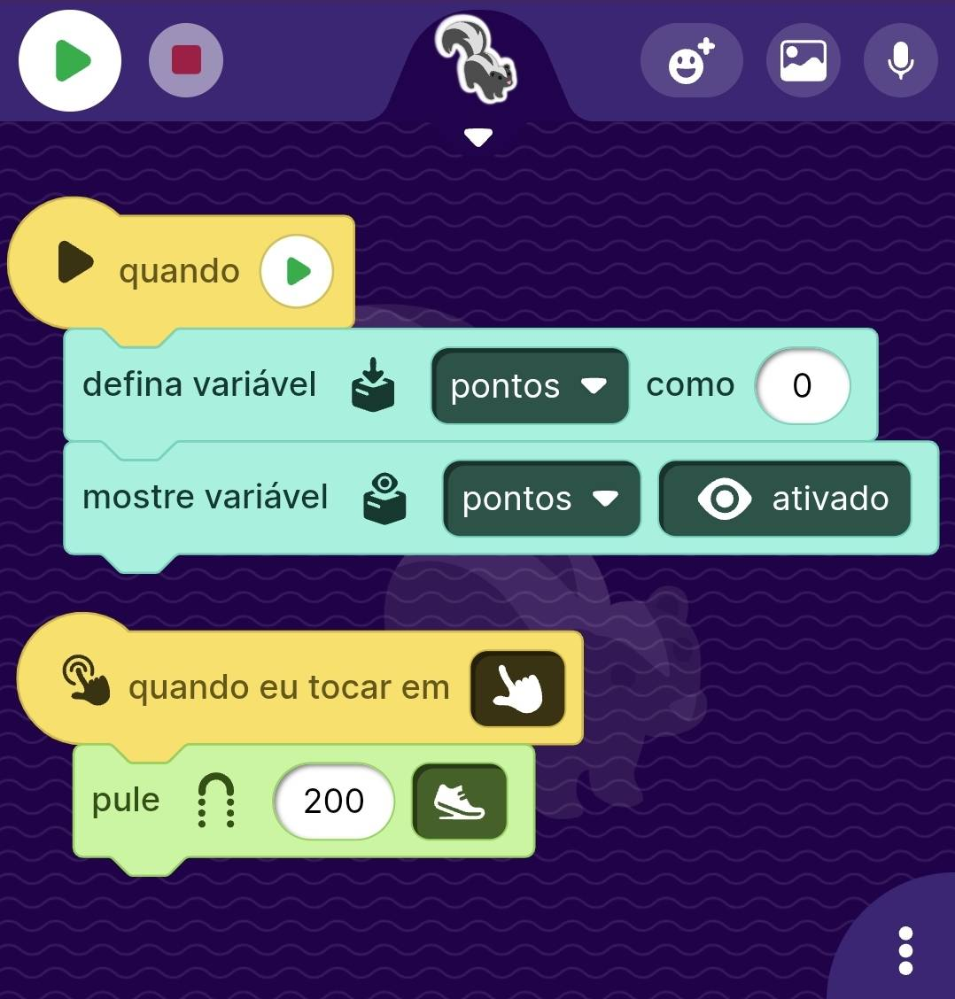
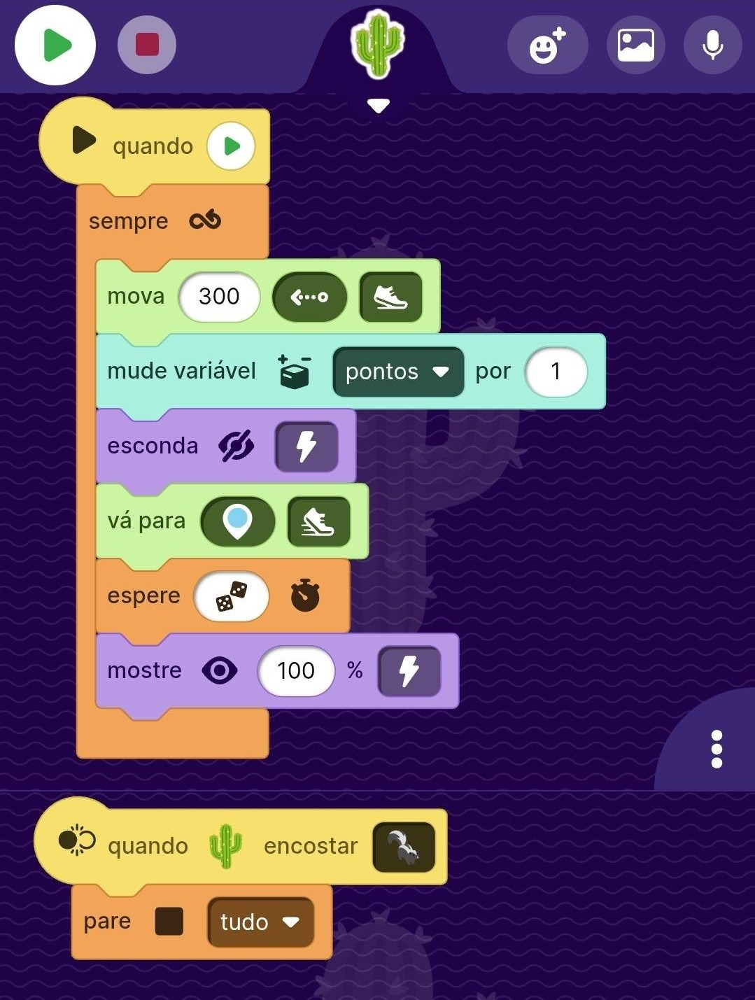

Projeto 2 - Gambá Saltitante
Neste projeto, vamos desenvolver um jogo similar ao que é mostrado no navegador Chrome quando o dispositivo está desconectado, teremos um gambá que deve pular os cactos que vem em sua direção.

O Ator Gambá
O ator Pássaro é controlado com blocos que simulam gravidade, movimentação e colisões. Usamos blocos como "quando play", "sempre mova" e "quando tocar" para criar a mecânica de voo.

O Ator Cacto
O ator Pássaro é controlado com blocos que simulam gravidade, movimentação e colisões. Usamos blocos como "quando play", "sempre mova" e "quando tocar" para criar a mecânica de voo.
Para o Futuro
- Implemente sons quando o ator colidir ou pontuar. (qual bloco usar)
- Faça que a pontuação seja mostrada na tela ao final do jogo. (qual bloco usar)
- Adicione novos obstáculos com diferentes comportamentos. (qual bloco usar)
Para o Futuro
- Implemente sons quando o ator colidir ou pontuar. (qual bloco usar)
- Faça que a pontuação seja mostrada na tela ao final do jogo. (qual bloco usar)
- Adicione novos obstáculos com diferentes comportamentos. (qual bloco usar)